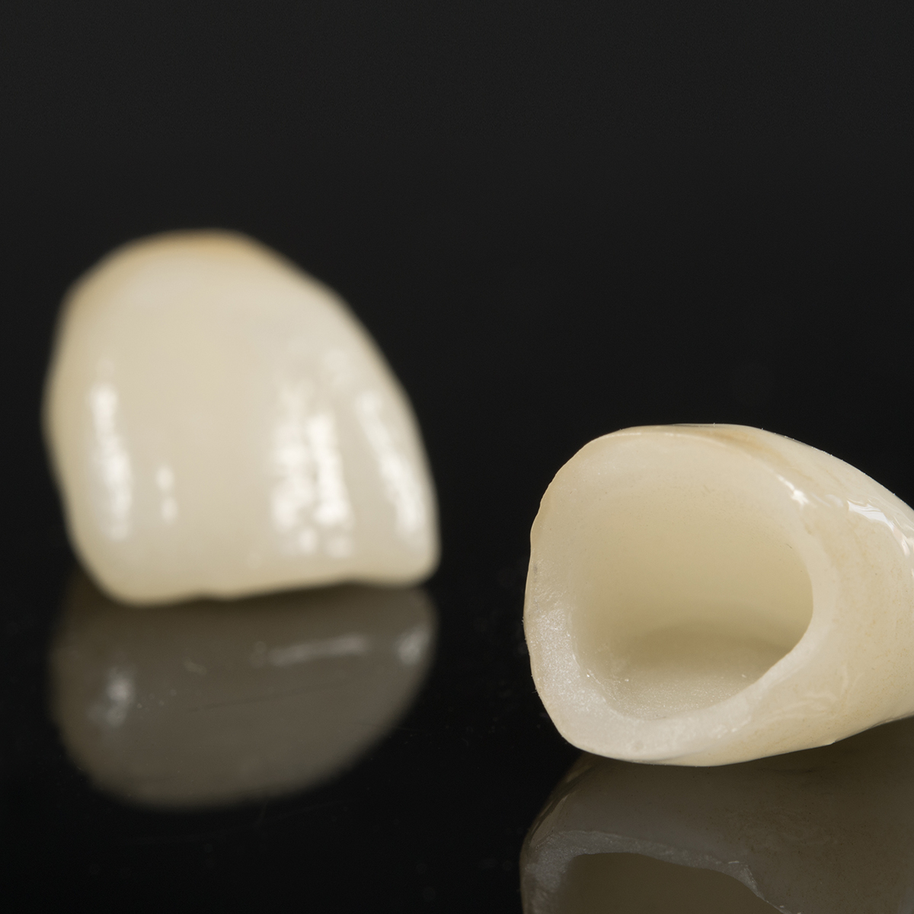
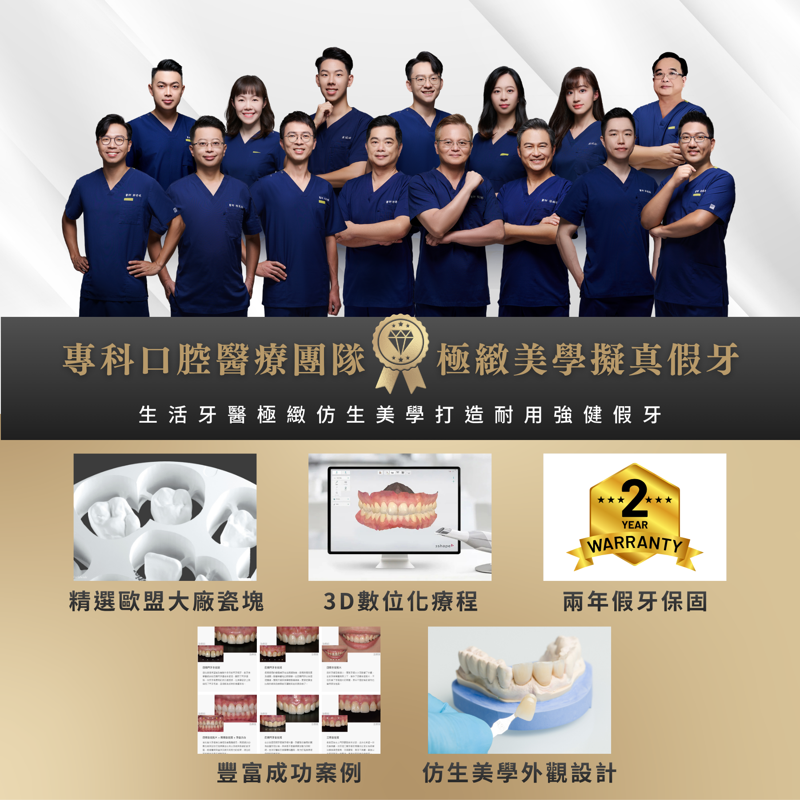
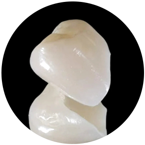

療程項目
全瓷冠 All Ceramic Crown
還原牙齒的自然光澤與完美形態
生活牙醫診所特選歐盟高透光陶瓷製作全瓷冠，完美模擬天然牙的光學特性，無金屬黑線疑慮， 是最適合前牙區的假牙材質。從數位掃描到美學設計， 每一顆都是為您量身打造的藝術品。
25+
年臨床經驗
7000+
成功修復案例
2
年安心保固

什麼是全瓷冠
像真牙一樣自然透亮
全瓷冠是不含任何金屬的陶瓷牙套，透光性高，外觀與真牙幾乎無異，是現代美學牙科的前牙假牙首選修復方案。
全瓷冠（All Ceramic Crown）是以全陶瓷材質製作的牙冠修復體，完全不含金屬成分，不怕金屬過敏或刺激牙肉。相較於傳統金屬烤瓷冠，全瓷冠的透光性更接近天然牙齒的釉質，在光線照射下能呈現自然的半透明質感，從任何角度看都難以分辨修復與真牙的差異。
若您有輕微齒列不整或齒型不佳的狀況，也可以利用全瓷冠來進行修正齒型，打造更完美的微笑黃金曲線。

高透光性
模擬天然釉質的光學特性，色澤自然逼真
無金屬成分
生物相容性佳，不怕未來牙齦發黑變色
高強度耐用
陶瓷材質強度高，可承受正常咬合力
邊緣密合
數位精密加工，與牙齦貼合無縫隙
生活牙醫的優勢
專科團隊打造擬真假牙
從歐盟瓷塊、3D 數位化療程到仿生外觀設計，讓全瓷冠兼顧美觀、密合與長期使用。

專科口腔醫療團隊
由美學與假牙修復醫師評估齒質、咬合與笑容比例，規劃適合的全瓷冠設計。
精選歐盟大廠瓷塊
選用歐盟大廠瓷塊製作修復體，兼顧色澤層次、穩定度與日常咬合需求。
3D 數位化療程
透過數位掃描與設計資料溝通齒型、咬合與邊緣密合，提升製作精準度。
仿生美學外觀設計
依鄰牙色階、透明感與臉型比例調整，讓假牙外觀更接近自然牙。
豐富成功案例
累積前牙美學與後牙修復案例，可協助患者理解不同條件下的改善方式。
兩年假牙保固
完成後提供假牙保固與使用說明，並安排回診追蹤咬合與清潔狀況。
療程流程
從初診到完美微笑
生活牙醫診所將製作流程SOP標準化，從術前模擬到精密製作，確保每個步驟精準至公釐。
初診諮詢
口腔檢查、X光評估，了解您的需求與目標，制定個人化修復計畫
收集資料
利用數位口腔儀或傳統取模，選擇假牙材質及顏色，將資料送給牙技師

牙齒修型
精準磨除必要的齒質，配戴臨時牙齒保護牙齒並修復臨時美觀
精密製作
與資深技師合作，CAD/CAM 電腦輔助製作，精度可達 0.01mm
黏著完成
試戴確認咬合與色澤，調整至完美後永久黏著，完成您的新微笑
材質比較
為何選擇全瓷冠
|
 |

|

|
|
|---|---|---|---|
| 比較項目 | 全瓷冠推薦 | 金屬烤瓷冠 | 全鋯冠 |
| 美觀透光性 | ◎ 最佳透光 | ● 牙齦易黑線 | ◎ 稍微透光 |
| 強度耐用度 | △ 中 | △ 中 | ◎ 特高（後牙為主） |
| 生物相容性 | ◎ 極佳 | △ 金屬過敏風險 | ◎ 極佳 |
| X光透視 | ◎ 可清楚檢查 | ✕ 金屬遮蔽 | ◎ 可清楚檢查 |
| 適用位置 | 前牙最佳 | 前後牙 | 後牙最佳 |
實際案例分享
真實的改變
每個案例都有獨特的故事，我們驕傲地分享患者的轉變與笑容

全瓷冠 × 4 顆 + 居家美白
美白與全瓷冠打造嶄新門面
患者因多年喝咖啡、茶導致嚴重牙齒染色，漂白無法改善。以 e.max 全瓷冠修復上排 6 顆門牙，還原自然透亮色澤。

全瓷冠 × 2 顆
汰換舊假牙 重獲完美笑容
透過 DSD 分析臉型比例，設計最適合患者的牙齒形態與排列。以氧化鋯全瓷冠修復，打造符合黃金比例的完美微笑曲線。

全瓷冠 × 4 顆
完美前齒讓外表質感加分
長期夜間磨牙導致全口牙齒嚴重磨耗，垂直高度喪失。以氧化鋯全瓷冠進行全口咬合重建，同時改善功能與美觀。
常見問題
全瓷冠療程FAQ
整理諮詢時最常被問到的問題，協助您在治療前更清楚了解流程、費用與照護方式。
牙柱主要用來增加牙齒核心結構的支撐，常見於根管治療後齒質剩餘較少的牙齒。是否需要製作會依剩餘齒質、咬合力量與修復範圍評估，雖然不是每一顆全瓷冠都一定需要牙柱，但為了提供足夠的支撐力，九成狀況都需要製作牙柱（牙釘）。
全瓷冠費用會依材質、牙齒位置、製作難度、或其他前置治療而不同。建議先由醫師檢查口腔狀況與需求後，再提供適合您的材質選擇與完整報價。
生活牙醫提供假牙 2 年保固，完成後也會說明使用與清潔方式，並建議定期回診追蹤，讓假牙維持穩定與長久使用。
差異通常來自醫師的修磨與黏著技術、數位掃描與設計流程、技工所製作品質、陶瓷材質選擇，以及顏色與形態調整的細緻度。好的全瓷冠不只看材質，也看整體診斷、設計與製作流程。建議選擇能證明瓷塊來源、有實際案例供參考、提供術後保固的醫療院所來製作，療程更有保證。
全瓷冠需要預留足夠厚度，讓陶瓷有良好的強度與美觀表現，但醫師會依牙齒狀況與咬合條件盡量保留健康齒質。實際修磨量會因牙齒排列、蛀牙範圍、舊假牙狀況與材質而不同。
牙醫知識
關於全瓷冠，你該知道的事
從材質原理到術後保養，我們整理了最實用的知識，幫助您做出最適合自己的決定。
開始您的微笑蛻變之旅
預約初診諮詢，由醫師親自評估您的狀況，為您規劃最適合的全瓷冠修復方案。無需承擔任何壓力，帶著您的疑問來，我們一起找到最好的解答。